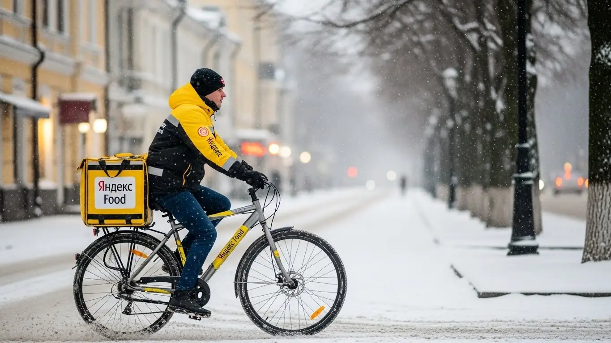
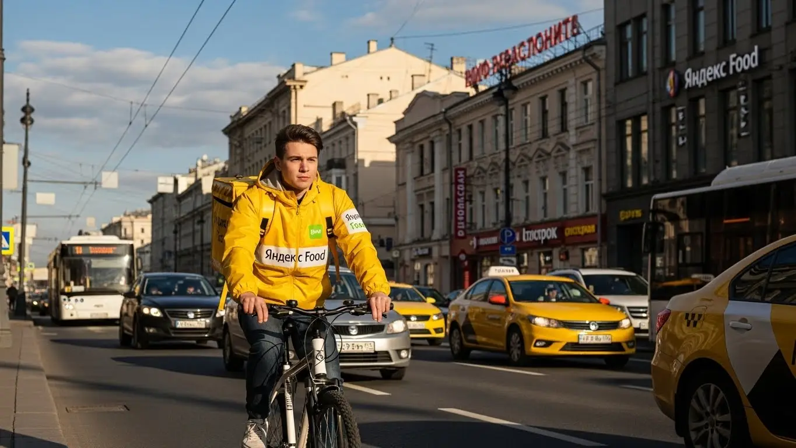
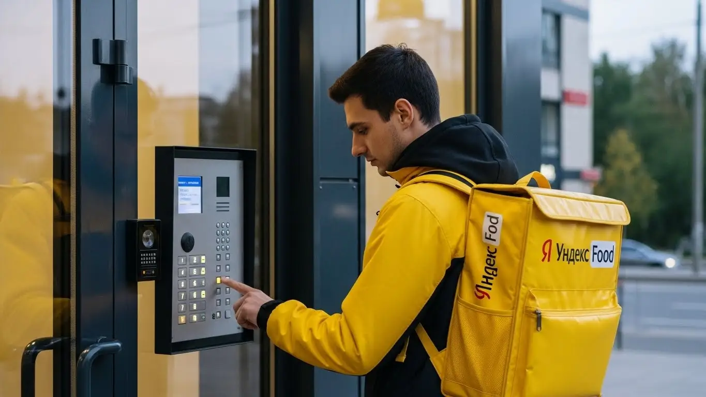
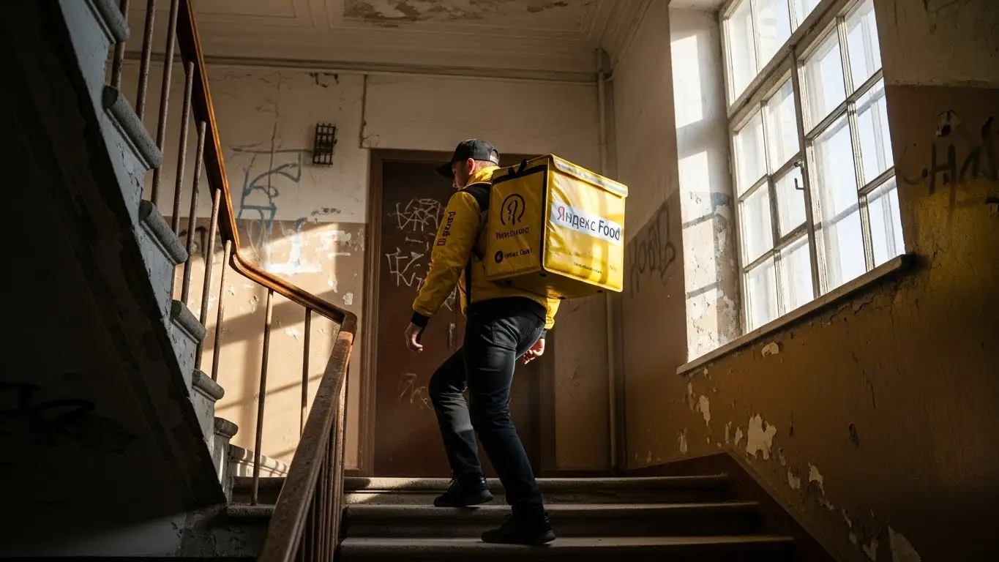
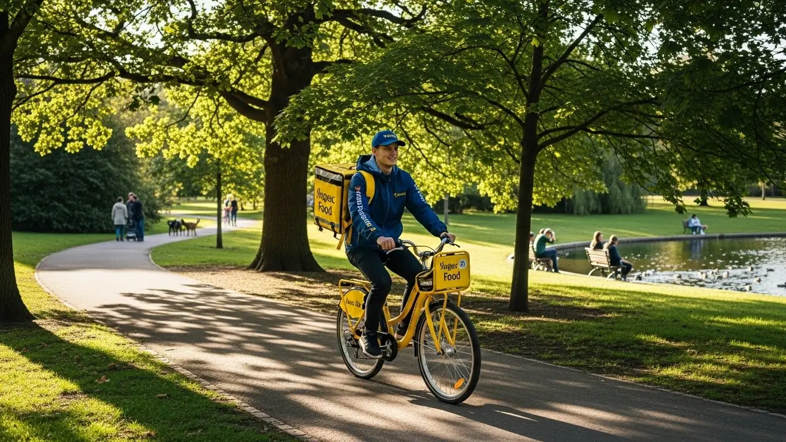

Работа курьером Яндекс Еда в Москве 2025-2026: доход и условия

- Работа курьером Яндекс Еды в Москве: для кого эта вакансия и что вы получите
- Сколько вы будете зарабатывать курьером в Москве: калькулятор дохода и разбор выплат
- Реальный заработок курьера в Москве: смены и месячный доход
- График работы и форматы занятости
- Требования к кандидату и документы
- Самозанятость, налоги и юридическая чистота
- Пошаговое оформление и первый выход на линию в Москве
- Пешком, на вело или на авто: что выгоднее в Москве
- Районы, маршруты и «топовые» зоны заказов в Москве
- Безопасность, страховка, штрафы и оплата простоя
- Плюсы и возможные минусы работы курьером в Москве
- Реальные истории и отзывы курьеров из Москвы
- Ответы на главные вопросы о работе курьером Яндекс Еды в Москве
- Короткие ответы на главные вопросы
- Итоги и ваш следующий шаг
Все города
Думаешь крутить педали или руль по Москве и зарабатывать? Реклама обещает золотые горы, а в голове крутится: «А сколько останется после штрафов, пробок на Садовом и убитой подвески?». Давай честно: работа курьером Яндекс Еды и Яндекс Лавки в Москве — это не просто «взял заказ и поехал». Это стратегия, знание города и умение считать свои деньги, особенно в этом сумасшедшем мегаполисе, где каждый километр на счету.
Без понимания местной «кухни» 9 из 10 новичков либо сливаются в первый же месяц, либо пашут за копейки, не понимая, куда уходит их доход. Ведь твой реальный заработок — это не цифра в приложении. Это зарплата минус расходы на бензин или проездной, минус налог самозанятого, минус амортизация. Чтобы заранее оценить свои перспективы, можно изучить подробные условия и воспользоваться калькулятором на официальной странице: работа курьером Яндекс Еда в Москве — там же есть и форма для быстрой заявки. А еще есть рейтинг, приоритет и «слепые зоны» в спальниках вроде Бирюлёво, где можно прождать заказ целый час. Большинство новичков в Москве наступают на одни и те же грабли, теряя время и деньги.
В этом гиде мы всё разложим по полочкам. Я честно посчитаю, сколько реально приносит работа курьером Яндекс Еда в Москве на авто, велике и пешком. Покажу, в каких районах — «золотая жила», а куда лучше не соваться в час пик. Разберём, как погода и пробки влияют на заработок, за что на самом деле штрафуют и как этого избежать. И главное — сравним, что выгоднее в московских реалиях: Еда, Лавка или кто-то из конкурентов.
Меня зовут Алексей. Я сам откатал не одну тысячу километров по Москве с желтым рюкзаком, а сейчас у меня свой небольшой таксопарк-партнёр. Так что никакой рекламной шелухи и обещаний «до 200 тысяч в неделю» не будет. Только мясо, только реальный опыт и цифры. Готов? Тогда погнали, сейчас всё разложу по полочкам.
Прежде чем нырять в детали, давай быстро пробежимся по главным моментам в формате короткого гида. Так ты сразу поймёшь, о чём пойдёт речь.
Что ты точно узнаешь из этого гида (без воды)
В этой статье ты ТОЧНО узнаешь:
- Сколько реально можно заработать в Москве за смену на авто, велике и пешком.
- В каких районах Москвы — «золотая жила», а куда лучше не соваться в час пик.
- Что выгоднее в московских пробках: пешком, велосипед или своё авто.
- За что на самом деле штрафуют и как не потерять рейтинг и заказы.
- Что такое самозанятость, сложно ли её оформить и сколько придётся платить налогов.
- Как выбирать слоты и «фиолетовые зоны» в приложении, чтобы не сидеть без заказов.
А если тебе некогда читать всю статью — переходи сразу к заключению, где ты найдёшь короткие ответы на все эти вопросы и указания, в каких разделах искать подробности.
А вот наглядная инфографика, чтобы основные цифры и факты были перед глазами.
Работа курьером в Москве: ключевые цифры 2025-2026
Работа курьером Яндекс Еды в Москве: для кого эта вакансия и что вы получите
Кому подойдёт эта работа в Москве
Давай начистоту: работа курьером в Москве — это не для всех, но для многих она может стать настоящим спасением. В первую очередь, это идеальный вариант для студентов. График можно подстроить под лекции, а деньги получать хоть каждый день — на жизнь, на съёмную квартиру или на развлечения. Сам когда-то так начинал, знаю, о чём говорю.
Это и отличный старт для тех, у кого нет опыта работы. Здесь не требуют диплом МГУ и резюме на три страницы — достаточно быть готовым к оформлению статуса самозанятого. Нужен только смартфон, желание двигаться и ориентироваться в городе.
Это также хорошая подработка для тех, у кого есть основная работа, но нужны дополнительные деньги. Вышел на пару часов вечером после офиса, развёз несколько заказов — вот тебе и плюс к зарплате. Ну и, конечно, это тема для водителей, которые хотят использовать свой автомобиль по максимуму, не связываясь с такси. А ещё, что важно, устроиться в сервис можно с 16–17 лет с согласия родителей — отличный способ заработать первые свои деньги.

Главные преимущества для жителей районов Марьино, Бутово, Митино
Главный плюс работы в Москве — возможность работать буквально у себя под окнами. Столица огромная, и мотаться с одного конца на другой ради смены — это потеря времени и денег. В Яндекс Еде ты можешь выбрать слот в своём районе и выполнять заказы из ресторанов, магазинов и Яндекс Лавки, не уезжая далеко от дома.
Живёшь ты, например, в Марьино. Там куча многоэтажек, кафе, магазинов — заказы есть всегда. Вышел из подъезда, включил приложение «Яндекс Про» и пошёл работать. То же самое касается Бутово или Митино. Это огромные спальные районы, где люди постоянно заказывают еду и продукты. Тебе не нужно тратить полтора часа на дорогу в центр и обратно. Ты работаешь на знакомых улицах, знаешь все короткие пути и где лучше срезать. Это экономит и силы, и время, а значит, позволяет больше заработать.
Краткое обещание по доходу и условиям
Если говорить о деньгах, то в Москве цифры вполне приличные. При полной занятости, работая по 8–10 часов в день, можно спокойно выходить на доход в 80 000 – 120 000 рублей в месяц. Если нужна подработка на несколько часов в день, то реально зарабатывать 2000–3500 рублей за смену. Конечно, всё зависит от твоего транспорта, скорости и количества выполненных заказов.
Ключевые условия просты и понятны. Во-первых, свободный график — ты сам решаешь, когда и сколько работать. Во-вторых, ежедневные выплаты на карту — не нужно ждать зарплаты месяц. В-третьих, начать можно без опыта — всему научат на коротком онлайн-инструктаже. Это честная и понятная работа, где твой доход напрямую зависит от твоих усилий.
Был у меня в парке парень, студент из Южного Бутово. Он начал работать как велокурьер, чтобы не просить денег у родителей. Брал вечерние смены по 4 часа после учёбы и одну полную смену в субботу. В будни у него выходило по 1800–2500 рублей, а в субботу, когда спрос высокий, мог и 4500 рублей сделать. В итоге за месяц набегало около 50 тысяч. Он быстро понял, что в его районе пик заказов — это вечера, когда люди возвращаются с работы и не хотят готовить.
В общем, работа курьером в Москве — это гибкий инструмент для заработка. Главное — не лениться и понимать, где и когда ты нужнее всего. Начинать советую со своего района: там и стены помогают, и не так страшно, если что-то пойдёт не так.
Сколько вы будете зарабатывать курьером в Москве: калькулятор дохода и разбор выплат
Из чего складывается доход курьера
Многих новичков пугает, что зарплата не фиксированная, но в этом и её главный плюс — нет потолка. Твой итоговый доход складывается из нескольких частей.
Во-первых, это базовая оплата за каждый выполненный заказ, которая включает подачу в ресторан или магазин и доставку клиенту. Во-вторых, к этой сумме добавляется плата за расстояние: чем дальше везти заказ, тем больше заплатят. В-третьих, в часы пик, в плохую погоду или в районах с высоким спросом действуют повышающие коэффициенты. Карта в приложении «Яндекс Про» окрашивается в яркие цвета, и стоимость каждого заказа может вырасти в 1,5, 2, а то и в 3 раза.
Кроме того, есть персональные бонусы за выполнение определённого количества заказов в день или неделю. И не забывай про чаевые — в Москве их оставляют довольно часто, и это полностью твои деньги, которые приходят на карту без каких-либо комиссий сервиса.
А теперь о самом важном — о гарантиях. Если ты вышел на плановый слот, а заказов мало, сервис начисляет оплату за простой. Ты не будешь сидеть бесплатно в ожидании работы. Для пеших курьеров также может действовать компенсация проезда на общественном транспорте, если маршрут до клиента длинный. Это делает систему честной и защищает твой доход.
Как пользоваться калькулятором дохода
Чтобы ты мог прикинуть свой будущий заработок, на сайте есть специальный калькулятор. Пользоваться им проще простого. Сначала выбираешь свой город — Москва. Затем указываешь, как планируешь доставлять: пешком, на велосипеде или на своём автомобиле. От этого сильно зависит и скорость, и возможный доход.
Дальше двигаешь ползунки: сколько часов в день и сколько дней в неделю ты готов работать. Например, 4 часа 5 дней в неделю как подработка или полноценные 8 часов 6 дней в неделю. Калькулятор мгновенно обработает эти данные и покажет примерный диапазон твоего заработка за день и за месяц. Это, конечно, не стопроцентная гарантия, а прогноз, но он основан на реальной статистике и помогает сориентироваться.
Прикинь свой возможный доход в Москве
Примерный доход в месяц:
* Расчёт является примерным, основан на средней ставке ~550 ₽/час для Москвы и не учитывает бонусы, чаевые и повышенные коэффициенты. Реальный доход может отличаться.
Чтобы увидеть более точные цифры и актуальные условия для столицы, загляни на официальную страницу — там есть подробный калькулятор, ответы на вопросы и форма для быстрой заявки: работа курьером Яндекс Еда в твоём городе.
Примеры расчёта для пешего, вело- и авто‑курьера в Москве
Давай разберём на конкретных примерах, сколько можно заработать в Москве.
- Пеший курьер в центре. Допустим, ты работаешь в районе Тверской или Китай-города 6 часов в день. Здесь много офисов и кафе, заказы короткие, но их очень много, особенно в обеденное время. За счёт плотности заказов и небольших расстояний можно делать по 4–5 доставок в час. С учётом бонусов и чаевых твой дневной заработок может составить 3000–4000 рублей.
- Велокурьер в спальных районах. Представь, что ты работаешь на велосипеде в Ясенево и доставляешь заказы в соседнее Коньково. Заказы здесь могут быть на более длинные дистанции, но на велосипеде ты быстрее пешехода и не зависишь от пробок. За 8-часовую смену в выходной день, когда много заказов из гипермаркетов, можно заработать 4000–5500 рублей.
- Водитель-курьер на своем автомобиле. Это самый доходный вариант. Ты можешь брать крупные и дальние заказы из сервисов Яндекс Доставка или Маркет, например, из ТЦ «МЕГА» в Химках, и развозить их по всему району и даже в ближайшее Подмосковье. В плохую погоду (дождь, снегопад) коэффициенты для автокурьеров взлетают до небес. За полный рабочий день в таких условиях можно заработать 7000–9000 рублей (без учёта расходов на бензин).
Один мой знакомый, водитель-курьер, выработал свою стратегию. Утром он работает в спальных районах на северо-западе, днём смещается к бизнес-центрам в районе Щукино. Вечером же берёт дальние заказы из гипермаркетов в Строгино и Красногорске. Постоянный мониторинг карты спроса в «Яндекс Про» позволяет ему всегда быть там, где «горит фиолетовым». В итоге его чистый месячный доход редко опускается ниже 110 тысяч рублей.
В итоге твой заработок — это не случайность, а результат грамотного подхода. Он складывается из многих факторов, и на большинство из них ты можешь влиять. Главный совет: изучай карту в приложении, не бойся пробовать разные районы и выходить на линию, когда другие сидят дома — именно тогда и зарабатываются самые большие деньги.

Реальный заработок курьера в Москве: смены и месячный доход
Поговорим о реальных цифрах: реклама про заработок в 200 тысяч в месяц — это не сказки, но и не лёгкие деньги. Такой доход в Москве вполне реален, но он складывается из твоего опыта, стратегии и умения ловить момент. Главный вопрос, который все задают: «сколько реально можно заработать курьером в сервисах Яндекса, таких как Еда или Доставка?». Ответ зависит от того, как ты подойдёшь к делу — как к лёгкой подработке или как к полноценной работе.
Диапазон дохода для подработки и полной занятости
В Москве вилка заработка очень широкая и напрямую зависит от твоей занятости и способа передвижения. Если ты ищешь подработку на 2–4 часа в день, чтобы закрыть мелкие расходы или накопить на что-то, цифры будут одни. Пеший курьер или велокурьер за такую короткую смену в среднем делает 1500–2500 рублей. В месяц такой доход составит 30–50 тысяч. На своём авто за то же время выйдет больше, около 2000–3500 рублей, то есть 40–70 тысяч в месяц, но не забывай вычитать расходы на бензин.
Если же ты рассматриваешь доставку как основную работу и готов уделять ей 8–10 часов в день, то и зарплата будет совершенно другой. Пеший или велокурьер при полной занятости в Москве стабильно зарабатывает 4000–6000 рублей за смену, что в месяц даёт от 80 до 120 тысяч рублей. Водитель-курьер на своём авто при таком графике может рассчитывать на 5000–8000 рублей в день. Это уже 100–160 тысяч рублей в месяц чистыми, после вычета топлива. И это не потолок, а реальные цифры для тех, кто работает с головой.
Как район, время суток и погода влияют на доход
Твой заработок — это не просто ставка за час, он постоянно меняется. Три кита, на которых держится высокий доход в Москве: район, время и погода. В центре, внутри ТТК, заказы короткие, их много, но и конкуренция выше. В спальных районах вроде Бутово или Митино дистанции больше, но и оплата за них выше. Самые «жирные» места — это зоны вокруг крупных ТРЦ («Авиапарк», «Европейский») и деловых кварталов типа «Москва-Сити», где всегда высокий спрос на доставку из Яндекс Еды.
Время суток решает всё. Есть два главных пика: обеденный (с 12:00 до 15:00) и вечерний (с 18:00 до 21:00). В это время в приложении «Яндекс Про» карта горит фиолетовым — это зоны с повышенными коэффициентами, которые могут умножить стоимость заказа в 1.5-2 раза. Выходные, особенно вечера пятницы и субботы, — это один сплошной пик. А погода — твой лучший друг. Как только в Москве начинается дождь, снегопад или сильная жара, коэффициенты взлетают до небес, а клиенты становятся щедрее на чаевые. Не бойся плохой погоды — именно в это время зарабатывают больше всего.
Советы по увеличению заработка от опытных курьеров
Чтобы не просто работать, а именно зарабатывать, нужно подходить к делу стратегически. Во-первых, всегда бери плановые слоты в пиковые часы. Это даёт тебе приоритет при распределении заказов, и ты не будешь простаивать. Во-вторых, не гоняйся за самым высоким коэффициентом через весь город — потеряешь больше времени и денег на дорогу. Выбери одну-две зоны, где много ресторанов и жилых домов, и работай там. Изучи свой район, знай короткие пути.
В-третьих, будь гибким. Если есть возможность, сочетай разные способы доставки. В центре Москвы, где вечные пробки, велосипед или самокат — лучший выбор. Для дальних доставок между спальными районами или в плохую погоду нет ничего лучше автомобиля. Даже если ты пеший курьер, активно пользуйся общественным транспортом, чтобы быстро перемещаться между «дорогими» зонами — сервис может компенсировать часть затрат на проезд. Главное — не сидеть на месте и постоянно анализировать, где сейчас больше всего заказов.
Вот недавний пример из практики. Парень-новичок на своей машине работал в сильный снегопад в декабре. Вместо того чтобы ехать в центр и стоять в пробках, он остался в своём районе, в Ясенево. Заказов было море, коэффициенты х2.5, а клиенты, которым он привозил горячую пиццу в такую метель, оставляли по 200-300 рублей чаевых. За 5 часов вечерней смены он сделал почти 8000 рублей. Это и есть работа с головой.
Сравнение реального дохода в Москве (в месяц)
| Тип занятости | Пеший / Велокурьер | Автокурьер (за вычетом топлива) |
|---|---|---|
| Подработка (2-4 часа/день) | 30 000 – 50 000 ₽ | 40 000 – 70 000 ₽ |
| Полная занятость (8-10 часов/день) | 80 000 – 120 000 ₽ | 100 000 – 160 000 ₽ |
В итоге, зарплата курьера в Москве — это не фиксированная ставка, а результат твоих действий. Реальный доход напрямую зависит от выбранного графика, транспорта и умения работать в моменты пикового спроса. Мой совет новичкам: не бойтесь плохой погоды и вечерних смен — именно тогда вы сможете заработать максимум и быстро набить руку.
График работы и форматы занятости
Главное преимущество этой работы — свободный график. Ты сам себе начальник и сам решаешь, когда и сколько работать. Никто не стоит над душой, нет строгого расписания с 9 до 6. Эта гибкость позволяет встроить доставку в любую жизнь, будь ты студент, офисный работник или человек, который просто не любит рамки.

Подработка после учёбы или основной работы
Совмещать доставку с чем-то ещё — проще простого. Вот пара реальных сценариев. Есть у меня знакомый студент из МГТУ им. Баумана. Он живёт в общежитии, выходит на смены на велосипеде 3-4 раза в неделю после пар, примерно с 19 до 22 часов. Катается по своему Басманному району, развозит ужины из ресторанов через Яндекс Еду. Стабильно делает 2000-2500 рублей за вечер, в месяц выходит около 30 тысяч — отличная прибавка к стипендии.
Другой пример — менеджер, работает в офисе 5/2. Ему нужны были дополнительные деньги на ремонт. Он выходит на линию на своей машине в пятницу вечером после работы и катается почти всю субботу. Работает в своём районе, в Строгино, в основном возит заказы из гипермаркетов и ресторанов. За такие выходные у него набегает 12-15 тысяч рублей. Это показывает, что подработка курьером — это не просто «деньги на карман», а серьёзный дополнительный доход.
Полная занятость: как выглядит типичный день курьера
Если ты решил работать полный день, твой график будет более структурированным, но всё равно гибким. Типичный день автокурьера в Москве выглядит примерно так. Выход на линию около 10-11 утра, когда начинаются первые заказы из магазинов и Яндекс Лавки. Работаешь в своём или соседнем спальном районе. К 12:30 смещаешься ближе к зоне с бизнес-центрами, например, в район Белорусского вокзала, чтобы поймать волну обеденных заказов из Яндекс Еды.
С 15:00 до 17:00 обычно затишье. В это время можно спокойно пообедать, заехать домой или выполнить пару дальних, но не срочных доставок. А с 18:00 начинается самое прибыльное время — вечерний пик. Возвращаешься в густонаселённые жилые районы, где люди заказывают ужины. Работаешь до 22:00-23:00, пока есть высокий спрос. За такой день можно выполнить 25-35 заказов и заработать очень приличную сумму.
Как планировать слоты и выходы через приложение «Яндекс Про»
Вся твоя работа управляется через приложение «Яндекс Про». Там есть два основных режима: свободный выход и плановые слоты. Свободный — это когда ты можешь в любой момент нажать кнопку «На линию» и начать получать заказы. Удобно для спонтанной подработки, но в часы низкого спроса заказов может быть мало.
Плановые слоты — это твой ключ к стабильному доходу. Ты заранее выбираешь в приложении район и время, в которое будешь работать, например, с 18:00 до 22:00 в Хамовниках. Сервис рассчитывает, что ты будешь на линии, и даёт тебе приоритет в заказах. Часто на таких слотах есть гарантированный минимальный доход. Но здесь важна дисциплина: на слот нельзя опаздывать, это влияет на твой рейтинг Активности. Чем выше рейтинг, тем больше хороших заказов ты получаешь. Поэтому планирование — основа успеха.
Был у меня в парке водитель, который поначалу выходил только на свободные смены и жаловался, что заказов мало. Я ему посоветовал попробовать забронировать несколько вечерних слотов подряд в районе с высоким спросом. Он так и сделал. Уже через неделю его дневной заработок вырос почти вдвое, потому что он перестал простаивать и начал получать заказы один за другим.
Итак, работа курьером в Яндексе предлагает действительно гибкий график, но для максимального и стабильного дохода нужно использовать планирование. Начинай с плановых слотов в знакомом районе — так ты быстрее поймёшь, как всё устроено, и обеспечишь себе постоянный поток заказов. А свободный режим оставь для тех дней, когда просто хочешь подработать пару часов без обязательств.
Требования к кандидату и документы
Возраст, гражданство и базовые условия
Сразу к делу: кого берут в курьеры и что для этого нужно, чтобы ты не переживал зря. Главное требование — возраст от 16 лет, причём опыт не нужен. Да, именно с шестнадцати, но с некоторыми нюансами, о которых я расскажу ниже. Если тебе уже есть 18, то вообще никаких проблем. По гражданству всё просто: нужен паспорт гражданина России или одной из стран ЕАЭС — это Беларусь, Казахстан, Армения, Киргизия.
Что касается физической формы, то никто не требует олимпийских рекордов. Если ты пеший курьер или велокурьер, важно просто быть готовым к движению — ходить или крутить педали несколько часов. Для водителя-курьера главное — уверенно управлять машиной и быть в состоянии донести заказ до двери. В общем, если у тебя нет серьёзных медицинских противопоказаний к физической активности, ты справишься.
Какие документы нужны для работы курьером
Чтобы всё было официально и без проволочек, подготовь заранее небольшой пакет документов. Это сэкономит тебе кучу времени. Ничего сверхъестественного не понадобится, большинство бумаг у тебя и так под рукой.
Вот основной список:
- Паспорт. Нужен для подтверждения личности и гражданства. Без него никуда.
- ИНН (Идентификационный номер налогоплательщика). Он требуется для оформления самозанятости и уплаты налогов. Если вдруг не знаешь свой номер, его за пару минут можно найти на сайте ФНС.
- Банковская карта. Любая карта российского банка, оформленная на твоё имя. На неё будут приходить заработанные деньги.
- Медицинская книжка. Нужна не для всех заказов, а только при доставке из некоторых ресторанов и магазинов со строгими санитарными нормами. Если её пока нет, не страшно: на старте можно брать заказы, где она не требуется, а оформить её позже.
Советую сразу сделать чёткие фотографии или сканы этих документов. Они понадобятся при регистрации в приложении, и лучше, чтобы они были под рукой в хорошем качестве.
Можно ли работать с 16 лет и какие есть альтернативы
Теперь подробнее про возраст, потому что это частый вопрос. Да, в Яндекс Еду можно устроиться пешим или велокурьером с 16 лет. Это отличная подработка для студентов и старшеклассников в Москве, чтобы получить первый опыт и свои деньги. Но есть важные условия, установленные законом, которые сервис строго соблюдает.
Во-первых, понадобится письменное согласие одного из родителей или опекуна. Это стандартная формальность, которая защищает и тебя, и компанию. Во-вторых, твой рабочий день будет короче, чем у взрослых курьеров, — никаких ночных смен и переработок, всё строго по Трудовому кодексу РФ. А вот водителем-курьером можно стать только с 18 лет, когда у тебя уже есть водительские права и стаж. Если тебе меньше 16, то в доставку, увы, не возьмут. В этом случае можно рассмотреть другие варианты подработки для подростков, например, раздачу листовок или работу промоутером.
Был у меня случай: пришёл устраиваться парень, 17 лет, студент колледжа из района Марьино. Глаза горят, хочет на новый телефон заработать. Переживал, что из-за возраста не возьмут и с документами будет волокита. Мы с ним сели, спокойно всё разобрали. Его мама написала согласие, ИНН мы нашли на сайте налоговой за три минуты. Он зарегистрировался как пеший курьер, и уже на следующий день вышел на свой первый слот в Люблино. За первые выходные, работая по 4-5 часов, он заработал около 3500 рублей. Главное — не бояться, а просто сделать всё по шагам.
В итоге, требования к кандидатам очень лояльные. Не нужно ни опыта, ни специального образования. Главное — быть совершеннолетним или, в случае с 16-17 годами, иметь разрешение родителей, а также подготовить базовый набор документов. Мой совет: перед заполнением анкеты просто собери все нужные бумаги в одну папку на телефоне, чтобы процесс регистрации занял у тебя не больше 15 минут.
Самозанятость, налоги и юридическая чистота
Почему курьеры Яндекс Еды работают как самозанятые
Многих новичков пугают слова «самозанятость» и «налоги». Кажется, что это сложно, муторно и вообще какая-то бюрократия. На деле всё ровно наоборот. Самозанятость, или налог на профессиональный доход (НПД), — это самый простой и официальный способ сотрудничества с Яндексом. Это не работа «в серую», а легальный доход, который ты можешь подтвердить, например, для получения кредита.
Главный плюс этого формата — предельная простота. Тебе не нужно вести бухгалтерию или сдавать декларации. Всё происходит автоматически через приложение Яндекс Про: ты выполняешь заказы, получаешь доход, а система сама рассчитывает налог. Это сделано специально, чтобы убрать всю головную боль и позволить тебе сосредоточиться на доставках. Работая как самозанятый, ты — сам себе начальник, но при этом твой доход полностью «белый» и законный.
Как за 10 минут оформить самозанятость через «Мой налог»
Оформление статуса самозанятого занимает меньше времени, чем заварить кофе. Серьёзно, весь процесс полностью онлайн и укладывается в 10-15 минут. Самый простой способ — через официальное приложение ФНС «Мой налог».
Вот пошаговая инструкция:
- Скачай приложение «Мой налог» из Google Play или App Store.
- Открой приложение и выбери опцию «Регистрация по паспорту РФ».
- Отсканируй камерой телефона главный разворот паспорта. Приложение само распознает все данные.
- Сделай селфи прямо в приложении. Оно сравнит фото с паспортом, чтобы убедиться, что это ты.
- Проверь данные, подтверди регистрацию и всё — ты самозанятый.
Кроме того, зарегистрироваться можно ещё проще — прямо через приложение «Яндекс Про» или через личный кабинет некоторых банков-партнёров. В этом случае процесс ещё более автоматизирован. Никаких поездок в налоговую, никаких очередей и бумажных заявлений.
Сколько и как платить налоги
Теперь о самом главном — о деньгах. Ставка налога для самозанятого курьера, который сотрудничает с юридическим лицом (Яндекс), составляет 6% от дохода. Не 13%, как НДФЛ при работе по трудовому договору, а именно 6%. Причём на старте всем самозанятым государство даёт бонус — налоговый вычет в размере 10 000 рублей, который временно снижает ставку.
Процесс уплаты налога элементарный. Приложение «Яндекс Про», через которое ты работаешь, автоматически передаёт информацию о твоём доходе в налоговую службу. В начале каждого месяца в приложении «Мой налог» появляется сумма налога за предыдущий месяц. Тебе остаётся только нажать кнопку «Оплатить» и провести платёж с привязанной карты. Сделать это нужно до 28 числа. Это гораздо проще и безопаснее, чем работать неофициально, постоянно переживая о проверках и не имея возможности подтвердить свой заработок.
Один из моих водителей, назовём его Сергей, долгое время работал неофициально в разных местах, привык к «серому» кэшу. Когда он пришёл ко мне в таксопарк, а потом решил подрабатывать и курьером, от слова «самозанятость» его поначалу передёрнуло. Он думал, это какие-то сложности, отчёты. Я просто взял его телефон, и мы вместе за 10 минут зарегистрировали его в «Моём налоге». Когда в следующем месяце он увидел в приложении уже посчитанную сумму налога и оплатил её в два клика, он был в шоке, насколько всё просто. А через полгода этот официальный доход помог ему без проблем получить потребительский кредит на ремонт в квартире.
Так что не бойся юридических формальностей. Самозанятость — это современный, удобный и абсолютно прозрачный формат работы. Мой совет: сразу пройди регистрацию, это снимет все вопросы и позволит тебе работать спокойно, зная, что у тебя всё легально и чисто. Это залог твоего спокойствия и финансовой стабильности.
Пошаговое оформление и первый выход на линию в Москве
Многие думают, что стать курьером — это долго и муторно, с кучей бумажек и собеседований. Забудь. В Яндексе условия работы максимально упрощены, а весь процесс переведён в онлайн, чтобы ты мог начать зарабатывать как можно быстрее, часто — уже в день регистрации. Вся система построена так, чтобы убрать лишние барьеры и дать тебе доступ к заказам без опыта за несколько простых шагов.
Шаг 1–2: анкета и онлайн‑обучение
Всё начинается с простой анкеты на сайте. Никаких вопросов про предыдущий опыт или рекомендаций с прошлой работы — это отличная возможность для старта без опыта. Нужно указать базовые данные: ФИО, номер телефона, гражданство. Заполнение занимает от силы 10 минут, после чего система быстро проверит твои данные, обычно автоматически и почти мгновенно.
Как только анкету одобрят, тебе откроется доступ к короткому онлайн-обучению. Это не нудные лекции, а несколько коротких видео или слайдов прямо в приложении «Яндекс Про». Тебе покажут, как пользоваться программой, принимать и выполнять заказы, общаться с клиентами и службой поддержки.
В конце будет небольшой тест из нескольких вопросов, чтобы убедиться, что ты понял основы. Это не экзамен, а просто проверка на внимательность — одно из ключевых требований к курьеру.
Шаг 3: получение сумки и доступа к заказам в Москве
Термосумка, или как её ещё называют «термокороб», — твой главный рабочий инструмент. Без неё система не даст доступ к заказам из ресторанов и магазинов, например, из Яндекс Еды или Лавки. В Москве получить её проще простого: можно забрать в одном из многочисленных курьерских центров, разбросанных по всему городу, или заказать доставку на дом.
Все доступные адреса и способы получения ты увидишь в приложении «Яндекс Про» после обучения. Выбираешь ближайшую точку, приезжаешь, получаешь сумку, её регистрируют в системе — и всё, ты готов к работе. С этого момента тебе становятся видны заказы в приложении.
Шаг 4: первый слот и первый доход
Теперь самое интересное — первый выход на линию. Условия работы в Яндексе предполагают свободный график: ты сам выбираешь, когда и где работать, через систему слотов. Слот — это запланированный отрезок времени (например, 4, 6 или 8 часов) в определённом районе. Мой совет новичку: для первого раза выбери свой район или тот, который знаешь как свои пять пальцев. Так ты будешь чувствовать себя увереннее и не потратишь время на навигатор.
Открываешь «Яндекс Про», выбираешь на карте удобный район, смотришь доступные слоты и бронируешь подходящий. Выйти на линию можно хоть в тот же день. Как только твой слот начнётся, ты получишь первый заказ, выполнишь его, и деньги сразу же появятся на балансе в приложении. По сути, это почти ежедневные выплаты, так как первый доход ты увидишь уже через час-два после старта.
Расскажу про одного нашего парня, для которого это отличная подработка. Он студент, утром заполнил анкету, пока ехал в универ. Днём заскочил в курьерский центр у метро «Юго-Западная», забрал термокороб. А вечером, вернувшись домой в Ясенево, взял короткий трёхчасовой слот в своём же районе. За эти три часа спокойно сделал 5 заказов и заработал первые 1300 рублей.
В общем, весь процесс от анкеты до первого заработка в Москве занимает от нескольких часов до одного дня. Главное — не тянуть и просто следовать пошаговой инструкции в приложении. Если решил попробовать, не откладывай: чем быстрее пройдёшь эти шаги, тем быстрее начнут поступать деньги.
Пешком, на вело или на авто: что выгоднее в Москве
Выбор транспорта — ключевой момент, который напрямую влияет на то, сколько зарабатывает курьер в Москве, и на его комфорт. Здесь нет универсального ответа «что лучше», потому что у каждого формата своя территория и свои плюсы. Пеший курьер будет королём в центре, а водитель потеряет там кучу денег и нервов на парковках. Давай разберёмся, какой вариант для чего подходит.

Пеший курьер: для центра и плотной застройки в Москве
Если планируешь работать в пределах Садового кольца или в других районах с плотной застройкой, формат пешего курьера — твой выбор. В центре Москвы, например, в районах Арбата, Тверского, Замоскворечья или Китай-города, огромное количество кафе и офисов находятся в шаговой доступности друг от друга. Заказы здесь короткие, часто в пределах одного-двух кварталов.
На машине ты здесь просто утонешь в пробках и будешь часами искать парковку, которая съест весь заработок. А пеший курьер может срезать путь через дворы, скверы и пешеходные улицы, доставляя заказы быстрее любого автомобиля. Это идеальный вариант для тех, кто живёт или учится в центре и ищет удобную подработку, не тратя время и деньги на дорогу до «рабочего места».
Велокурьер: быстрые доставки между спальными районами
Велосипед — это золотая середина, а велокурьер — один из самых востребованных форматов. Он даёт скорость и манёвренность, при этом ты не зависишь от пробок и не платишь за бензин. Я называю это «оплачиваемый фитнес». Этот вариант идеально подходит для больших спальных районов Москвы, таких как Марьино, Строгино, Митино или Бутово. Расстояния там уже не пешие, а на машине можно застрять в пробках на узких улочках.
Как курьер на велосипеде, ты легко преодолеваешь 3–5 километров между точками, объезжая все заторы. Особенно выгодно работать в районах с развитой инфраструктурой — велодорожками и парками. Ты сможешь выполнять больше заказов в час по сравнению с пешим курьером, а значит, и твой доход будет выше.
Водитель‑курьер: заказы по всему городу и пригороду Химки, Мытищи
Работа курьером на своем авто — это инструмент для тех, кто нацелен на максимальный заработок и готов работать с крупными и дальними заказами. На машине выгодно возить заказы из гипермаркетов, Яндекс Маркета, а также выполнять доставки между удалёнными районами или в пригороды, например, в Химки, Мытищи или Люберцы. Такие заказы оплачиваются значительно выше.
Особенно курьер на автомобиле в выигрыше в плохую погоду — в дождь или снегопад спрос на доставку взлетает, коэффициенты растут, а пеших и велокурьеров на линии становится меньше. Да, есть расходы на бензин и амортизацию, но при грамотном подходе и выборе правильных зон (например, у крупных ТЦ на МКАДе в часы пик) чистый доход водителя всегда будет выше.
Сравнение форматов доставки в Москве
| Параметр | Пеший курьер | Велокурьер | Водитель-курьер |
|---|---|---|---|
| Средний доход | Стабильный, хороший для подработки | Выше, чем у пешего, за счёт скорости | Самый высокий, особенно на дальних заказах |
| Лучшие районы | Центр (ЦАО), плотная застройка | Крупные спальные районы (Марьино, Строгино) | Весь город, МКАД, пригороды (Химки, Мытищи) |
| Плюсы | Нет расходов, фитнес, независимость от пробок | Скорость, манёвренность, экономия | Комфорт, большие и дорогие заказы, работа в любую погоду |
| Минусы / Расходы | Физическая нагрузка, зависимость от погоды | Нужен велосипед, усталость, сезонность | Расходы на бензин, парковку, амортизацию авто |
У меня в парке есть водитель, который поначалу пытался работать в центре. За день он тратил на платные парковки по 1000–1500 рублей и постоянно нервничал. Потом он сменил тактику: стал брать слоты в районе ТЦ «МЕГА Белая Дача» и развозить заказы по Люберцам, Котельникам и Жулебино. В итоге его чистый заработок за смену вырос почти в полтора раза, потому что пропали расходы на парковку, а заказы стали длиннее и дороже.
В итоге, в Москве есть место для всех. Выбирай формат исходя из того, где живёшь и какие у тебя цели, будь то полноценная работа или подработка. Мой совет: начни с того, что у тебя уже есть — ноги, велосипед или машина. Поработай неделю, посмотри на цифры в «Яндекс Про», и тогда уже решай, стоит ли что-то менять для увеличения дохода.
Районы, маршруты и «топовые» зоны заказов в Москве
Москва — город огромный, и кататься по нему бездумно — прямой путь к пустому кошельку и убитым ногам. Запомни главное: твоя задача не просто доставлять заказы Яндекс Еды, а делать это с умом, выбирая самые «хлебные» места. Где-то заказы сыплются как из рога изобилия, а где-то можно час простоять впустую. Умение читать карту спроса в приложении и понимать логику города — это 80% твоего успеха.
Новичку может показаться, что надо сразу рваться в центр, но это не всегда так. Иногда в твоём спальном районе за обеденное время можно увеличить доход больше, чем в запаркованном центре, где каждый метр — это борьба. Давай разберёмся, где в Москве деньги, а куда лучше не соваться без опыта.
Где больше всего заказов: ТРЦ, бизнес‑центры и туристические места
Есть места, которые работают как магниты для заказов. Это зоны, где люди массово едят, работают и отдыхают. Во-первых, это гигантские ТРЦ. Возьмём, к примеру, «Авиапарк» на Ходынке или «Европейский» у Киевского вокзала. Там десятки ресторанов и фуд-кортов, которые генерируют непрерывный поток заказов из Яндекс Еды, особенно в обед, по вечерам и в выходные. Работать рядом с таким центром — значит почти никогда не оставаться без дела.
Во-вторых, это деловые кварталы. Классика жанра — «Москва-Сити». С 12 до 15 часов здесь настоящий бум: тысячи офисных сотрудников заказывают обеды. Коэффициенты и бонусы в это время взлетают до небес. Похожая ситуация и в других крупных бизнес-центрах, например, в районе Белорусского вокзала или на Павелецкой. И, конечно, туристический центр: Арбат, Патриаршие пруды, Китай-город. Здесь всегда много заказов из дорогих ресторанов, а значит, и чеки выше, и чаевые щедрее.
Работа в своём районе: примеры для популярных жилых кварталов
Многие думают, что для хорошего заработка обязательно ехать в центр, но это миф. Можно отлично работать, почти не выезжая за пределы своего района. В Москве полно крупных «спальников», которые по сути являются городами в городе. Например, Марьино или Бутово. Здесь огромное количество жителей, свои торговые центры, кинотеатры, ресторанные улочки и, что важно, много заказов из «Яндекс Лавки» и «Яндекс Маркета».
Такая работа имеет свои плюсы: ты знаешь каждую тропинку, не тратишь время и деньги на дорогу до «зоны», меньше стресса от бешеного трафика. В районах вроде Митино или Строгино тоже полно работы. Главное — изучить свою локацию: понять, где находятся основные точки притяжения (кафе, пиццерии, магазины) и в какое время там пик заказов. Часто такая подработка или постоянная работа в знакомом районе оказывается выгоднее, чем погоня за сверхприбылью в непредсказуемом центре.
Как выбирать зоны и слоты в «Яндекс Про», чтобы не мотаться впустую
Приложение «Яндекс Про» — твой главный инструмент планирования. Нельзя просто выходить на линию, когда вздумается, и ждать чуда. Открой карту в приложении: ты увидишь зоны, подсвеченные разными цветами. Чем темнее и насыщеннее фиолетовый цвет, тем выше спрос и, соответственно, повышающий коэффициент. Твоя цель — работать именно в таких «горящих» зонах.
Лучше всего планировать своё время заранее, выбирая плановые слоты. Это забронированные часы работы в определённом районе. Выбирая такой слот в зоне с высоким спросом (например, в центре в пятницу вечером), ты гарантируешь себе поток заказов. Свободные слоты тоже есть, но в них нет гарантий. Мой совет: смотри на карту, анализируй, где спрос будет выше всего (например, в дождь заказов всегда больше), и бронируй плановый слот заранее. Так ты не будешь кататься порожняком, сжигая бензин или свои силы.
Из практики: у меня парень-велокурьер начинал работать в своём районе, в Ясенево. Сначала развозил заказы из местных «Вкусно — и точка» и пиццерий. За пару недель выучил все дворы и подъезды, набил руку. Потом осмелел, стал брать плановые слоты на 3-4 часа в обеденное время у метро «Калужская», где много офисов. В итоге его дневной доход вырос почти в полтора раза, потому что он совмещал знание своего района с вылазками в зоны высокого спроса в пиковые часы.
В общем, ключ к стабильному доходу в Москве — это грамотное планирование маршрутов и выбор зон. Начинай со своего района, чтобы набраться опыта, а потом постепенно подключай «жирные» локации в центре в самое выгодное время. Не ленись анализировать карту в «Яндекс Про» — это твои деньги.
Безопасность, страховка, штрафы и оплата простоя
Работа курьера — это не только деньги и свободный график, но и определённые риски. Ты постоянно в движении, на дороге, имеешь дело с разными людьми. Поэтому важно говорить не только о заработке, но и о том, как работать безопасно и что делать, если что-то пошло не так. Сервисы Яндекса, такие как Яндекс Еда и Доставка, дают хорошую поддержку, но и от тебя самого зависит очень многое.
Нужно чётко понимать, что покрывает страховка, за что можно получить штраф и как защищён твой доход, даже если заказов мало. Это не пугалки, а рабочие моменты, которые нужно знать, чтобы чувствовать себя уверенно. Давай по порядку разберём эти четыре кита: страховка, безопасность, штрафы и оплата простоя.
Бесплатная страховка на сменах и что она покрывает
Это один из главных плюсов работы с Яндексом. Пока ты находишься на активном заказе на плановом слоте, твоя жизнь и здоровье застрахованы. Это не просто слова, это реальная финансовая защита. Страховка покрывает несчастные случаи, которые могут произойти во время доставки. Например, если ты велокурьер и, не дай бог, упал и сломал руку — страховая компания компенсирует расходы на лечение. То же самое касается и более серьёзных ситуаций, вплоть до ДТП.
Сумма покрытия доходит до 2 миллионов рублей, что вполне серьёзно. Конечно, никто не хочет, чтобы страховой случай наступил, но само знание, что ты не останешься один на один с проблемой, даёт огромное спокойствие. Чтобы страховка сработала, важно сразу же сообщить о происшествии в службу поддержки через «Яндекс Про» и следовать их инструкциям. Это цивилизованный подход, который отличает серьёзный сервис от шарашкиных контор.
Правила безопасности на дороге и при доставке
Страховка — это хорошо, но лучшая защита — твоя собственная голова на плечах. Для каждого типа курьера есть свои неписаные правила. Если ты пеший курьер, твои главные враги — электросамокаты и автомобили, выезжающие со дворов. Не утыкайся в телефон на переходе, всегда смотри по сторонам. Помни, что в Москве очень интенсивное движение.
Для велокурьеров первое правило — шлем. Второе — фонари и светоотражатели вечером. Не гоняй по тротуарам, распугивая пешеходов, но и не лезь в левый ряд на ТТК. Держись правой стороны дороги, показывай манёвры рукой и всегда будь готов к тому, что водитель тебя не видит. Для курьеров на автомобиле главный совет — не спеши. Лишние 5 минут не стоят помятого крыла. Паркуйся аккуратно, в Москве с этим строго, штрафы за парковку могут съесть весь дневной заработок. И общее для всех: в плохую погоду (дождь, гололёд) снижай скорость вдвое и будь вдвойне внимательнее.
Какие бывают штрафы и как их избежать
Теперь о серьёзном: система штрафов или, как это чаще называется, понижение приоритета, существует. Но это не способ отобрать у тебя деньги, а механизм контроля качества. Никто не будет наказывать за случайное опоздание на 5 минут из-за пробки. Санкции прилетают за системные и грубые нарушения. Например, за хамство клиенту или сотруднику ресторана, за порчу заказа (привёз разлитый суп, потому что плохо закрепил термокороб, или помятую пиццу), за регулярные опоздания на плановые слоты или за отказ от уже принятого заказа без веской причины.
Как этого избежать? Элементарной вежливостью и ответственностью. Перед тем как забрать заказ, проверь, хорошо ли он упакован. Если опаздываешь — предупреди поддержку. Если возникла конфликтная ситуация с клиентом — не вступай в перепалку, а сразу пиши в чат поддержки. По сути, чтобы не получать штрафы, нужно просто добросовестно выполнять свою работу. За несколько лет я не видел ни одного случая, чтобы адекватного курьера «заштрафовали» ни за что.
Что такое оплата простоя и как она защищает ваш доход
Это, пожалуй, одно из ключевых преимуществ, которое многие новички недооценивают. Представь: ты вышел на плановый слот, приехал в указанную зону, готов работать, а заказов нет. Такое бывает, например, в середине буднего дня или из-за технического сбоя. В большинстве других сервисов ты бы просто потерял время и деньги. Но в Яндекс Еде действует механизм оплаты простоя.
Если ты находишься онлайн в нужной зоне в рамках своего слота, но заказы не поступают, система начисляет тебе минимальную гарантированную оплату за это время. Это твоя страховка от нулевого дохода. Она гарантирует, что твой выход на линию не будет напрасным. Эта фишка реально защищает твой кошелёк и позволяет планировать доход более стабильно, ведь ты знаешь, что даже в самый «тухлый» день не уйдёшь с пустыми карманами.
Был у меня случай с парнем, который работал курьером на своем авто. Он только начал, взял слот в спальном районе днём во вторник. А спрос был низкий. За два часа — всего один заказ. Он уже расстроился, думал, зря бензин сжёг. А потом в отчёте увидел доплату за простой, которая покрыла ему большую часть времени. Он тогда понял, что система реально работает на твою защиту, и стал увереннее брать слоты.
Итак, главное, что нужно вынести из этого блока: твоя безопасность — в твоих руках, но у тебя есть и надёжная поддержка в виде страховки. Штрафов можно легко избежать, если работать на совесть. А оплата простоя — это твой финансовый тыл, который даёт уверенность в завтрашнем дне. Всегда будь на связи с поддержкой — это лучший способ решить любую проблему.
Плюсы и возможные минусы работы курьером в Москве
Давай начистоту, как и в любом деле, здесь есть свои сильные стороны и моменты, к которым нужно быть готовым. Я не буду рассказывать сказки про лёгкие деньги, но объясню, почему для многих парней и девчонок эта работа становится отличным вариантом. Главное — трезво оценить все «за» и «против» перед тем, как выходить на линию.
В Москве работа курьером в сервисах вроде Яндекс Еды или Доставки имеет свою специфику. С одной стороны, огромный город, миллионы заказов и высокий спрос. С другой — пробки, сумасшедший ритм и большие расстояния. Понимание этого баланса — ключ к стабильному доходу и работе без нервов.
Сильные стороны работы курьером в Москве
Главный козырь, конечно, — это свободный график. Ты сам решаешь, когда и сколько работать. Можно выходить на пару часов после основной работы или учёбы, а можно выполнять доставки полные смены. Никто не стоит над душой с планами и отчётами, твой заработок зависит только от тебя. Это идеальный вариант для подработки или если ты не любишь офисную рутину с 9 до 18. Такие условия работы привлекают многих.
Второй важный момент — ежедневные выплаты. Заработал сегодня — получил деньги на карту сегодня. Не нужно ждать аванса и зарплаты неделями. Для многих это решающий фактор, особенно когда деньги нужны срочно. Кроме того, в Яндекс Еде ты работаешь официально как самозанятый, а значит, у тебя идёт подтверждённый доход, и всё по закону. Плюс, не забывай про поддержку: на линии ты не один, всегда есть чат с саппортом, а на время смены действует бесплатная страховка. И, конечно, возможность работать рядом с домом — выбираешь свой район и не тратишь по два часа на дорогу до работы.
С какими сложностями чаще всего сталкиваются курьеры
Первое, с чем ты столкнёшься, — это физическая нагрузка. Особенно если ты пеший курьер или на велосипеде. Целый день на ногах или в седле, да ещё и с термокоробом за спиной — это не шутки, к вечеру будешь чувствовать каждую мышцу. Важно правильно распределять силы и не брать на себя больше, чем можешь вывезти, особенно вначале. Хорошая обувь и удобная одежда — твои лучшие друзья.
Вторая сложность — московская погода. Дождь, снег, жара или пронизывающий ветер — заказы есть всегда. Работать в ливень или мороз — то ещё испытание, о чём часто пишут в отзывах сотрудников. С другой стороны, в плохую погоду в Яндекс Доставке всегда включаются повышенные коэффициенты, и можно заработать значительно больше. Главное — правильно экипироваться: непромокаемая куртка, термобельё, перчатки. Ну и, конечно, общение с людьми. Клиенты бывают разные, иногда попадаются не самые вежливые. Тут важно сохранять спокойствие и не принимать негатив на свой счёт.
Кому такая работа подходит, а кому лучше поискать другой формат
Эта работа идеально подходит активным и самостоятельным людям, даже без опыта. Если ты студент, которому нужна подработка со свободным графиком, или ищешь дополнительный доход к основной зарплате — это твой вариант. Также она подойдёт тем, кто не может или не хочет сидеть в офисе, любит движение, хорошо ориентируется в городе и ценит независимость. Если ты интроверт, но при этом спокойно относишься к коротким контактам по делу, тоже справишься.
А вот кому стоит подумать дважды. Если ты не переносишь физические нагрузки, ненавидишь ходить пешком и любая непогода выбивает тебя из колеи — будет тяжело. Если тебе для мотивации нужен постоянный контроль начальника и чёткие задачи на день, установленные кем-то другим, — тоже не твоё. И если ты очень конфликтный человек, которому сложно сдержаться при общении с капризным клиентом, лучше поберечь свои и чужие нервы. Эта работа требует выносливости, самодисциплины и стрессоустойчивости.
Вот, например, был у меня парень, назовём его Олег. Решил стать курьером на своем авто, думал, будет просто кататься по городу и слушать музыку. В первый же сильный снегопад он застрял в пробке на ТТК, опоздал на два заказа подряд и психанул. Вечером пришёл сдаваться. Я ему посоветовал не рубить с плеча, а попробовать сменить тактику: в плохую погоду выбирать не центр, а свой спальный район, где он знает все дворы и проезды. Он попробовал работать в районе Чертаново, и дело пошло. За смену в снегопад он сделал меньше заказов, но из-за высокого коэффициента в Яндекс Доставке его доход оказался почти в полтора раза больше обычного.
| Плюсы | Возможные минусы |
|---|---|
| Свободный график (сам решаешь, когда работать) | Физическая нагрузка (весь день на ногах или на велосипеде) |
| Ежедневные выплаты (деньги на карте в тот же день) | Работа в любую погоду (дождь, снег, жара) |
| Работа рядом с домом (выбираешь удобный район) | Общение с разными клиентами (требует терпения) |
| Официальный доход (статус самозанятого) | Возможные простои (бывают часы с низкой активностью) |
| Поддержка и страховка (не остаёшься один на один с проблемой) | Зависимость от смартфона (нужен хороший заряд и интернет) |
В итоге, работа курьером в Яндексе — это палка о двух концах. Она даёт отличную свободу и возможность хорошо зарабатывать, но взамен требует физической и моральной выносливости. Мой совет: не бросайся в омут с головой. Начни с коротких смен по 3-4 часа в своём районе, чтобы понять, подходят ли тебе такие условия работы и ритм.
Реальные истории и отзывы курьеров из Москвы
Теория — это хорошо, но лучше всего о работе курьером в Яндексе говорят реальные истории. Я попросил нескольких своих ребят поделиться опытом. Это разные люди: студент, водитель на подработке и велокурьер. У каждого свой подход, свои маршруты и свои фишки.
Эти отзывы помогут тебе понять, как можно встроить такую подработку в свою жизнь и на какой реальный заработок в Москве можно рассчитывать. Это не рекламные буклеты, а живой опыт парней, которые каждый день крутят педали или руль на московских улицах.
История студента МГУ, который совмещает учёбу и доставку
Меня зовут Кирилл, я учусь на третьем курсе в МГУ, живу в общежитии на проспекте Вернадского. Работаю пешим курьером в Яндекс Еде уже почти год, устроился без опыта. Для меня это идеальный формат подработки, потому что пары часто плавающие, и подстроиться под обычную работу с фиксированным графиком нереально. Здесь я просто открываю приложение «Яндекс Про», когда у меня есть окно в 3-4 часа, и выбираю слот в своём районе Раменки.
Мой типичный день выглядит так: утром и днём я на учёбе, а вечером, часов с шести до десяти, выхожу на линию. В это время как раз пик заказов: люди возвращаются с работы и заказывают ужин. Работаю в основном вокруг МГУ, проспекта Вернадского и Мичуринского проспекта. Здесь много ресторанов и жилых комплексов, заказы есть всегда. Моя зарплата за 4-часовую смену — 1800–2500 рублей. За неделю, если выходить 4-5 раз, получается около 10 000 рублей. Для студента это отличные деньги, которые полностью покрывают мои расходы.
Опыт автокурьера, который выходит в пиковые часы
Я Виктор, мне 38, у меня есть основная работа в офисе. Курьером на своем авто в Яндекс Доставке я подрабатываю по вечерам и в выходные. Для меня это способ не только заработать на всякие «хотелки» вроде новой резины, но и просто сменить обстановку, разгрузить голову после офиса. Я выхожу на линию в самые выгодные слоты: с 18:00 до 22:00 в будни и по 6-8 часов в субботу и воскресенье.
В будни я обычно выбираю районы поближе к центру, где много бизнес-центров и ресторанов — например, Хамовники или Пресненский. Вечером пробок уже меньше, а заказов вал. В выходные могу поехать и в спальные районы, вроде Строгино или Крылатского, там тоже хороший спрос. На автомобиле удобно возить большие и дорогие заказы из Яндекс Маркета, которые пешим курьерам не дают. Мой доход за вечер буднего дня чистыми (уже за вычетом бензина) составляет 2500–3500 рублей. За выходные можно сделать 8000–12000 рублей. Меня такой формат полностью устраивает: нет обязательств, выхожу, когда есть желание и силы.
Мнение пешего или вело‑курьера о работе в центре и спальниках
Меня зовут Аня, я работаю велокурьером в Яндекс Еде. Поначалу каталась только в своём спальнике — в Ясенево. Плюсы очевидны: всё знакомо, трафик спокойный, нет такой суеты, как в центре. Но есть и минус: заказы могут быть на большие расстояния, от одного конца района до другого, а ресторанов не так много. Приходилось иногда ждать новый заказ.
Потом я решила попробовать поработать в центре, в районе Тверской и Китай-города. Это, конечно, совсем другой мир. Заказы сыплются один за другим, простоя почти нет. Расстояния короткие, часто в пределах одного-двух кварталов. Но и минусы есть: вечные толпы людей, нужно быть очень внимательной на узких улочках, плюс постоянные бордюры и лестницы. Зато с термосумкой на велосипеде маневрировать проще, чем пешком. Сейчас я чередую: когда хочется спокойствия — работаю в спальнике, когда нужны быстрые деньги и драйв — еду в центр. И там, и там можно хорошо заработать, просто условия работы ощущаются по-разному.
Как видишь, у каждого свой подход, и это главное преимущество работы курьером в Яндексе. Один и тот же инструмент — приложение «Яндекс Про» — разные люди используют по-своему, исходя из своего графика, транспорта и даже характера. Мой совет: не бойся экспериментировать. Попробуй поработать в разных районах Москвы и в разное время, чтобы найти свой идеальный ритм и самые доходные места.
Ответы на главные вопросы о работе курьером Яндекс Еды в Москве
Собрал здесь ответы на самые частые вопросы новичков о работе курьером в Яндекс Еде. Без воды, только по делу, чтобы у тебя сложилась полная и честная картина об этой вакансии в Москве.
Ответы на ключевые вопросы кандидатов
- Нужно ли оформлять самозанятость и как платить налоги?
Да, для прямого сотрудничества с Яндексом статус самозанятого (СМЗ) обязателен. Не пугайся, это несложно и даже выгодно. Оформление занимает 10–15 минут через официальное приложение «Мой налог» — регистрируешься по паспорту, и всё. Ставка налога составляет 6% с дохода от юридических лиц, которым и является Яндекс. Никакой сложной бухгалтерии: приложение само формирует чеки и считает налог к уплате раз в месяц. Это твой официальный доход, всё легально и прозрачно. - Какой телефон и интернет нужны для работы курьером?
Для работы понадобится смартфон на базе Android версии 7.0 или новее. Приложение «Яндекс Про», через которое приходят все заказы, на айфонах не работает. Важно, чтобы у телефона был хороший аккумулятор (или носи с собой пауэрбанк), стабильно работающий GPS-модуль и камера для фотоотчётов. Интернет должен быть быстрым и стабильным — для полной занятости в Москве закладывай тариф с 15–20 ГБ трафика в месяц. - Что будет, если в смену мало заказов — как работает оплата простоя?
Это одно из ключевых преимуществ работы в Яндекс Еде. Если ты вышел на запланированный слот (смену), а заказов в твоей зоне временно мало, сервис начисляет минимальную гарантированную оплату за час. Такая оплата простоя — твоя страховка от полного отсутствия заработка. В Москве сидеть совсем без дела приходится редко, но эта гарантия защищает твой доход в часы низкого спроса. - Есть ли в Яндекс Еде штрафы и за что их могут применить?
Да, система санкций существует. Но её цель — не отобрать у тебя деньги, а поддерживать качество сервиса. Наказания применяют за серьёзные нарушения: регулярные опоздания на слоты, отказ от уже принятого заказа без веской причины, повреждение упаковки, грубость в адрес клиента или ресторана. Если работать нормально, соблюдать простые правила и быть вежливым, то со штрафами ты, скорее всего, никогда не столкнёшься. - В чём разница между Яндекс Едой и Яндекс Доставкой, где лучше работать?
Если коротко: Яндекс Еда — это в основном доставка готовой еды из ресторанов и кафе. Заказы обычно на небольшие расстояния, идеально для пеших и велокурьеров в районах с плотной застройкой. Яндекс Доставка — это более широкий сервис: посылки, документы, товары из магазинов и Яндекс Маркета. Здесь заказы могут быть крупнее и на большие расстояния, что больше подходит для курьеров на авто. Но самое главное — всё это работает в одном приложении «Яндекс Про», и ты можешь получать заказы из разных сервисов, что увеличивает твой потенциальный доход. - Сколько реально можно заработать курьером в Москве и чем эта вакансия лучше других сервисов?
В Москве заработок курьера один из самых высоких по стране. При полной занятости (8–10 часов в день) пеший курьер или велокурьер может получать 3500–5000 рублей за смену. Доход курьера на автомобиле — 5000–8000 рублей и выше. В месяц при графике 5/2 это выходит в 80 000–150 000 рублей до вычета расходов. Главное отличие от конкурентов — это мощная экосистема Яндекса. В одном приложении «Яндекс Про» тебе доступны заказы из Еды, Лавки, Маркета и сервиса Доставки. Это обеспечивает плотный поток заказов, а такие фишки, как оплата простоя и страховка, дают больше уверенности. - Можно ли работать без опыта и что будет на обучении?
Да, опыт работы не требуется абсолютно, можно устроиться с нуля. Обучение — это короткий онлайн-курс прямо в приложении «Яндекс Про». Тебе покажут несколько видеороликов о том, как пользоваться программой, как правильно общаться с клиентами и представителями ресторанов. После этого нужно будет пройти небольшой тест. Весь процесс занимает от силы пару часов. - Берут ли с 16–17 лет и какие есть ограничения по возрасту?
Да, в Яндекс Еду можно устроиться пешим или велокурьером с 16 лет. Для этого потребуется письменное согласие одного из родителей или опекуна. Важно понимать, что для несовершеннолетних действуют ограничения по Трудовому кодексу: сокращённый рабочий день, запрет на ночные смены и переноску тяжестей. Работать водителем-курьером на автомобиле можно строго с 18 лет при наличии водительских прав.
Короткие ответы на главные вопросы
Собрали здесь краткую выжимку из статьи. Если нет времени читать всё, вот главные тезисы в формате шпаргалки.
Коротко по делу: ответы на главные вопросы
Короткие ответы на ключевые вопросы
Сколько реально можно заработать в Москве за смену на авто, велике и пешком.
При подработке 2–4 часа в день — 1500–3500 ₽. При полной занятости пеший или велокурьер может выйти на 80 000–120 000 ₽ в месяц, а водитель-курьер — на 100 000–160 000 ₽ после вычета расходов на топливо.
→ Подробнее читай в разделе «Реальный заработок курьера в Москве: смены и месячный доход».В каких районах Москвы — «золотая жила», а куда лучше не соваться в час пик.
Больше всего заказов вокруг крупных ТРЦ («Авиапарк», «Европейский») и в деловых кварталах («Москва-Сити»), особенно в обед и вечером. При этом работать в своём спальном районе (Марьино, Бутово, Митино) тоже выгодно — меньше стресса и знакомые маршруты.
→ Подробнее читай в разделе «Районы, маршруты и «топовые» зоны заказов в Москве».Что выгоднее в московских пробках: пешком, велосипед или своё авто.
В центре (внутри Садового кольца) выгоднее всего быть пешим курьером. Для больших спальных районов идеально подходит велосипед — быстро и без пробок. Автомобиль незаменим для дальних заказов, доставок в пригород и работы в плохую погоду.
→ Подробнее читай в разделе «Пешком, на вело или на авто: что выгоднее в Москве».За что на самом деле штрафуют и как не потерять рейтинг и заказы.
Санкции применяют за серьёзные нарушения: грубость клиенту, порчу заказа, регулярные опоздания на плановые слоты или отказ от принятого заказа. Чтобы этого избежать, будьте вежливы, аккуратны и пользуйтесь чатом поддержки в сложных ситуациях.
→ Подробнее читай в разделе «Безопасность, страховка, штрафы и оплата простоя».Что такое самозанятость, сложно ли её оформить и сколько придётся платить налогов.
Это обязательный и самый простой легальный статус для работы. Оформляется за 10 минут онлайн через приложение «Мой налог». Налог составляет 6% с дохода, рассчитывается и уплачивается автоматически раз в месяц.
→ Подробнее читай в разделе «Самозанятость, налоги и юридическая чистота».Как выбирать слоты и «фиолетовые зоны» в приложении, чтобы не сидеть без заказов.
Планируйте смены заранее, выбирая плановые слоты в пиковые часы (обед 12:00–15:00, вечер 18:00–21:00). На карте в «Яндекс Про» ориентируйтесь на зоны с высоким спросом, подсвеченные фиолетовым, — там действуют повышающие коэффициенты.
→ Подробнее читай в разделе «График работы и форматы занятости».
Для полного понимания темы рекомендую прочитать всю статью — там ты найдёшь примеры, сравнения и дельные советы из практики.
Итоги и ваш следующий шаг
Краткие выводы по работе курьером в Москве
Работа курьером в Москве — это реальная возможность зарабатывать от 80 до 150 тысяч рублей в месяц, имея при этом полностью свободный график. Ты сам решаешь, когда и сколько работать, что идеально подходит как для основной занятости, так и для подработки. Условия абсолютно прозрачны: все доходы видны в приложении, а ежедневные выплаты позволяют получать деньги на карту сразу.
Ключевое преимущество Яндекс Еды перед другими сервисами в столице — это огромный поток заказов из разных сервисов Яндекса и финансовые гарантии, такие как оплата простоя. Это не просто «беготня с сумкой», а понятная работа с чёткими правилами и стабильным доходом, если подходить к ней с умом.
Как сделать первый шаг уже сегодня
Начать проще, чем кажется, бюрократии минимум. Вот что нужно сделать:
- Заполнить анкету на сайте. Это займёт не больше 5–10 минут, нужны только базовые данные.
- Подготовить документы. Держи под рукой паспорт, ИНН и реквизиты банковской карты. Если тебе 16–17 лет, заранее попроси родителей написать согласие.
- Пройти онлайн-обучение и тест в приложении Яндекс Про. Это можно сделать дома с телефона в любое удобное время.
- Получить термосумку и выбрать первый слот. После активации ты сможешь забрать экипировку (термосумку или термокороб) в одном из партнёрских центров в Москве и сразу же запланировать свой первый выход на линию. Весь процесс от анкеты до первого заработка может занять всего один день.